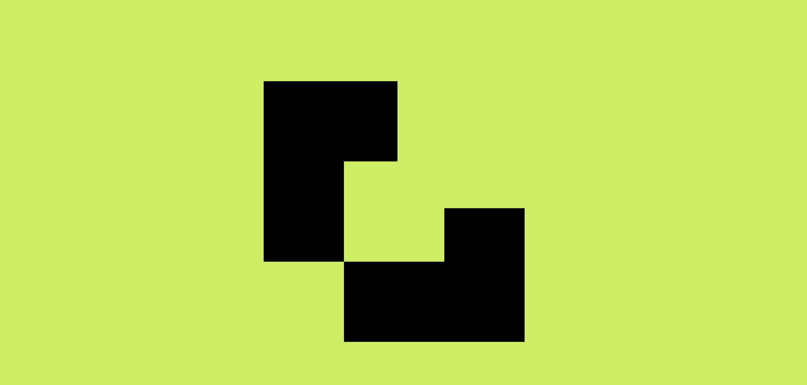
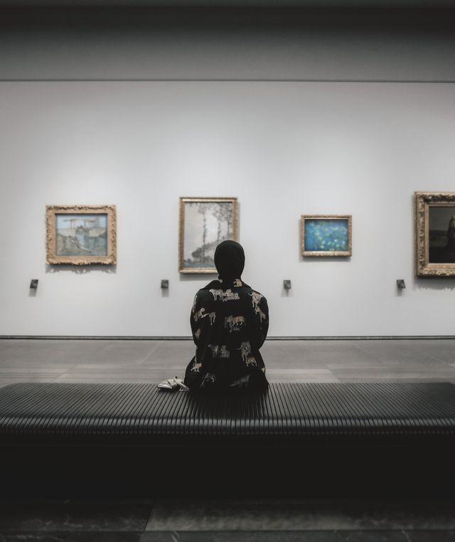

GitHub Profile Development
This project focused on creating and enhancing my GitHub profile as a space to document my growth as a developer. Through regular updates and project uploads, I created a portfolio that reflects my skills, creativity, and commitment to continuous learning.

CSS Shape Composition
This project involved creating a geometric design using HTML and CSS. By combining div elements, positioning techniques, and CSS styling, I transformed simple shapes into a structured visual composition while developing a deeper understanding of layout and design principles.

Visual Storytelling Gallery
Creative Expressions is a photo gallery project that celebrates individuality, confidence, and artistic vision. Through a curated collection of images, the project explores themes of creativity, beauty, and self-expression while demonstrating an appreciation for visual storytelling and design.